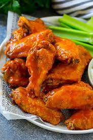

My Recipe
Buffalo Wing Recipe
The beauty of baked buffalo chicken wings is that you can get the same, crispy texture without the need for splattering hot fryer oil. Using our handy baking powder trick and a wire rack, they get a wonderful crust with a fraction of the fat of deep-fried versions. Tossing the crispy wings together with a buttery, tangy buffalo sauce is irresistibly good.
I've made this recipe many times and it's never disappointing. The crispy wing combined with the flavorful sauce makes for the perfect buffalo wing.
Ingredients

Chicken Wings
Baking Powder
Salt
Garlic Powder
Unsalted Butter
Frank's Original Red Hot Sauce
Sugar
How To Prepare
 1. Prep Chicken Wings-cut wings in half to separate the drums from the wingettes. Pat the wings dry with a paper towel. Preheat the oven and line a rimmed baking sheet with foil and place a wire rack over the pan.
2. Make dry seasoning-Combine baking powder, salt, and garlic powder.
3. Season the wings-Place the chicken wings in a large mixing bowl and toss them in the dry seasoning until well-coated. Assemble the wings in a single layer over the rack.
4. Bake in the center of the oven for 50 minutes, flipping halfway.
5. Make the Buffalo Sauce-In a medium bowl, stir together melted butter, sugar, and hot sauce.
6. Toss Wings in Sauce-Transfer chicken wings to a bowl, and toss, drizzle with sauce and toss to coat. Serve with your favorite sauce.
1. Prep Chicken Wings-cut wings in half to separate the drums from the wingettes. Pat the wings dry with a paper towel. Preheat the oven and line a rimmed baking sheet with foil and place a wire rack over the pan.
2. Make dry seasoning-Combine baking powder, salt, and garlic powder.
3. Season the wings-Place the chicken wings in a large mixing bowl and toss them in the dry seasoning until well-coated. Assemble the wings in a single layer over the rack.
4. Bake in the center of the oven for 50 minutes, flipping halfway.
5. Make the Buffalo Sauce-In a medium bowl, stir together melted butter, sugar, and hot sauce.
6. Toss Wings in Sauce-Transfer chicken wings to a bowl, and toss, drizzle with sauce and toss to coat. Serve with your favorite sauce.